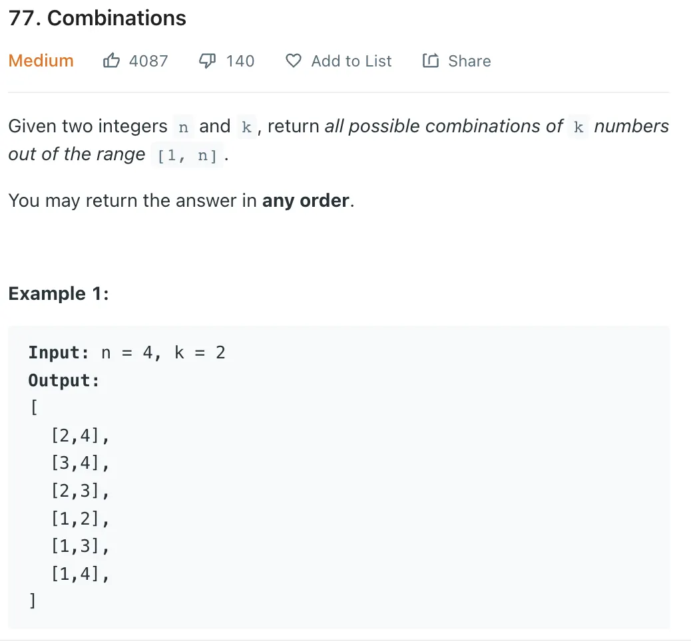
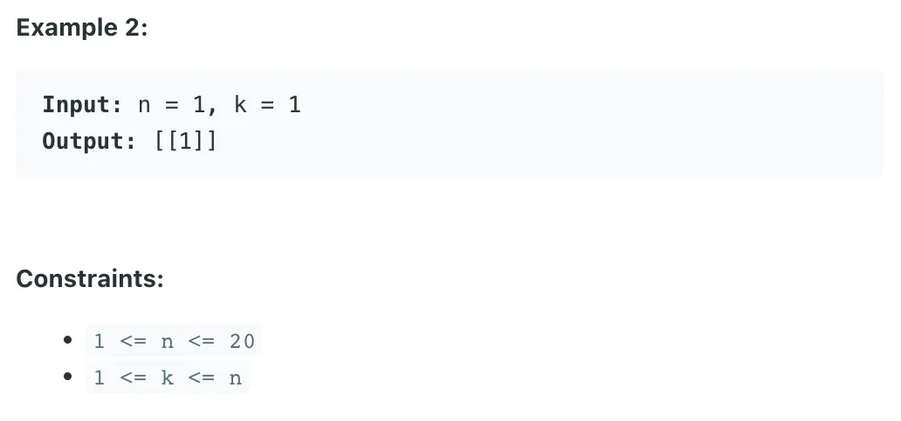

77. Combinations
考過的公司：Amazon、Google
Question


✍🏽 My Solution
class Solution {
List<List<Integer>> result = new ArrayList<>();
public List<List<Integer>> combine(int n, int k) { // 1~n
backtrack(n, k, 1, new ArrayList<>());
return result;
}
private void backtrack(int n, int k, int step, List<Integer> path) {
if (path.size() == k) {
result.add(new ArrayList<>(path));
return;
}
// 基础版本的递归终止条件：if (step == n + 1) {
// 搜索起点的上界 + 接下来要选择的元素个数 - 1 = n
// 搜索起点的上界 = n - (k - path.size()) + 1
if (step > n - (k - path.size()) + 1) {
return;
}
// 不選當前考慮的數 step，直接遞歸到下一層
backtrack(n, k, step + 1, path);
// 選擇當前考慮的數 step
path.add(step);
backtrack(n, k, step + 1, path);
// 撤銷
path.remove(path.size() - 1);
}
}
🧠 Thought Process
- Why did I choose this particular implementation?
- 參考王爭
- 提前退出的條件是因為，如果 n = 7, k = 4，從5開始搜尋已經沒有意義了，因為即使選上5，後面的數字只有6跟7，湊不出k個數
Solution # [technique]